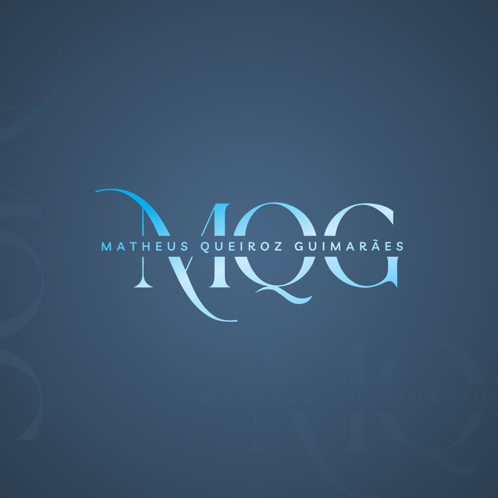

Você não precisa passar por isso sozinho.
Cuidar da cabeça também é cuidar do corpo e da vida. Aqui você encontra um suporte médico humanizado e realista.
Tempo de verdade para ouvir sua história por completo, sem consultas de 5 minutos ou interrupções.
Explicações claras sobre o que está acontecendo com sua saúde, sem jargões médicos difíceis.
Estratégia de tratamento individualizada, pensada para o seu bolso, seu trabalho e sua rotina.
Você não fica desamparado após o atendimento. Suporte contínuo para avaliar sua melhora e estabilidade.
Sintomas comuns que frequentemente sobrecarregam o dia a dia e merecem cuidado médico especializado:
Aceleração mental constante, sensação de aperto no peito, falta de ar, medos desproporcionais e preocupação excessiva.
Sensação persistente de vazio, perda do prazer em atividades do dia a dia, cansaço extremo sem causa aparente.
Dificuldade para adormecer, despertares no meio da madrugada ou acordar exausto, como se a mente nunca desligasse.
Esgotamento emocional, sobrecarga mental contínua, perda de concentração e irritabilidade frequente.
Avaliação médica completa, solicitação de exames de rotina e acompanhamento de queixas físicas do dia a dia.
Avaliação cuidadosa e responsável sobre a real necessidade e adaptação de tratamentos já em curso.
Acredito que o cuidado médico em saúde mental deve ser acessível e descomplicado. Atendimentos com sigilo profissional e empatia.
Fale diretamente comigo ou com a minha equipe no WhatsApp para tirar dúvidas e agendar seu horário.
Chamar no WhatsAppA consulta é feita por videochamada em ambiente seguro e sigiloso. Você recebe receitas, atestados e pedidos de exames digitalmente válidos em todo o território nacional (com assinatura digital padrão ICP-Brasil).
Não. Você pode agendar diretamente a sua consulta para conversar sobre qualquer desconforto emocional, ansiedade ou queixa de saúde.
O atendimento é particular e com valor acessível. Aceitamos pagamento prático via Pix e cartão de crédito facilitado.
Basta clicar em qualquer botão desta página para conversar no WhatsApp. Você receberá as datas e horários disponíveis de forma rápida.